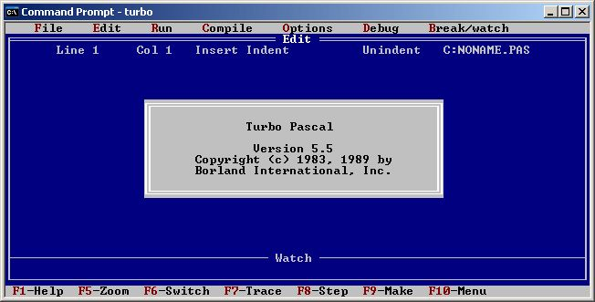

Pascal es un lenguaje de programación cuyo objetivo era crear un lenguaje que facilitara el aprendizaje de la programación.
Con el tiempo su utilización se estendio para convertirse en una herramienta para la creación de aplicaciones de todo tipo.
Como la mayoria de los lenguajes de alto nivel, Pascual cuenta con variables, que han de ser definidas antes de usarlas;
asi como sentencias o instrucciones, funciones, expresiones, procesos...
Pascal es un lenguaje estructurado con una parte declarativa y otra ejecutiva fuertemente tipificado.
La entrada de informacion de realiza por el teclado y la salida por la pantalla.
Pascal es un lenguaje de programacion compilado, esto quiere decir que debera pasarse y guardarse a codigo maquina
mediante un compilador para convertirlo en un archivo ejecutable (.exe) y pueda ser leido.
De los muchos compiladores gratuitos, aqui os dejo para que os descargueis el Turbo Pascal vr7.0
que lleva algunas directrices escritas por mi sobre su instalacion y su uso.

Caracteristicas generales
* Pascal es un lenguaje estructurado con una parte declarativa y otra ejecutiva.
* Pascal no distingue entre mayusculas y minusculas, es lo mismo escrivir MinOmbRe que mINoMbrE o que minombre.
* Otros elementos que el compilador ignorará completamente son los espacios, las líneas nuevas y los espacios de tabulador.
* Las variables deben ser declaradas antes de ser utilizadas, asi como tambien el tipo de variable que sean.
* Los tipos de datos que soporta son enteros, reales, caracter, cadena y logicos.
* Los comentarios se pueden escribir entre { y }, entre (* y *) o empezando la linea por //.
* El final de cada instruccion, se cerrara con punto y coma ";".
* La informacion se muestra en pantalla con la funcion WriteLn(mensaje);
* La informacion se recoge con el teclado mediante la funcion ReadLn(variable)